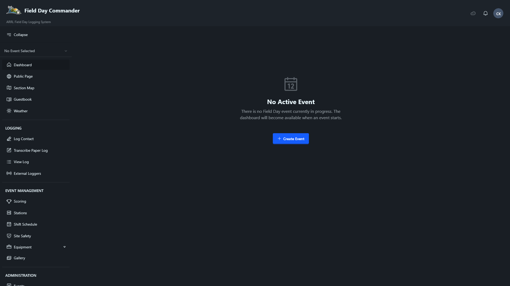
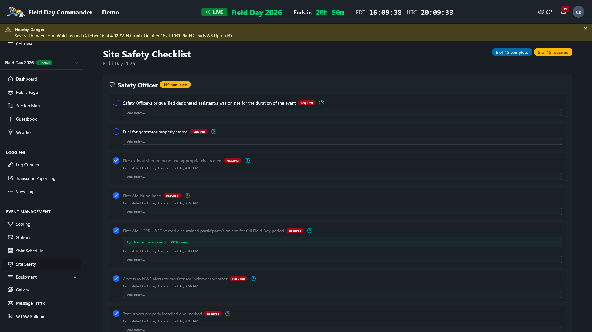
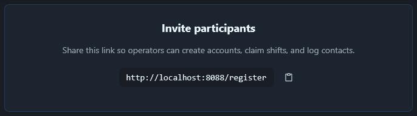

You've deployed FD Commander and can reach it in a browser. Now what? This guide walks through everything between "the server is running" and "operators are logging contacts." The whole process takes about 20 minutes if you have your event details handy.
Initial Setup Wizard
The first time you open FD Commander in a browser, it launches a three-step setup wizard. The deploy script already created a System Administrator account for you (callsign: SYSTEM, email: admin@localhost). The wizard walks you through configuring it.
Step 1: Admin Password
Set a secure password for the admin account. The password must be at least 12 characters with uppercase, lowercase, numbers, and symbols. FD Commander checks it against known data breaches and will reject passwords that have appeared in public leaks.
This is the only account with full system access. If you lose it and email isn't configured, there's no self-service recovery. Store it somewhere safe before Field Day.
Step 2: Site Branding
Customize how FD Commander looks for your club:
- Site Name: defaults to "Field Day Commander." You might change it to your club name or something like "W3XYZ Field Day 2026."
- Site Tagline: defaults to "ARRL Field Day Logging System." It shows under the site name.
- Site Logo: upload your club logo (PNG, JPG, or SVG, max 2 MB, square and at least 200x200px). Optional.
Step 3: System Preferences
Fill in your organization details and system-wide settings:
- Organization Name (required): your club or group name (e.g., "Springfield Amateur Radio Club").
- Organization Callsign: your club's station callsign (3 to 10 uppercase letters and numbers). Optional.
- Organization Email and Organization Phone: optional contact details.
- Timezone (required): searchable dropdown. Pick the timezone where your event will run.
- Date Format (required): ISO (2026-04-05), US (04/05/2026), or EU (05/04/2026).
- Time Format (required): 24-hour (16:10) or 12-hour (04:10 PM).
- Contact Email: optional, used as public contact information.
Click Complete Setup. FD Commander saves your settings and redirects you to the login page. Sign in with the email admin@localhost and the password you just created. You'll land on the main dashboard.
Everything from the setup wizard is editable under Administration > Settings. You can update your admin password under your profile, and change branding and preferences any time.
Create the Event
From the dashboard, click Create Event (or go to Administration > Events and click it there). The form is a stack of cards: Event Information, Event Location, Station Configuration, Power Configuration, GOTA Station (Get On The Air), Public Visitors, and Guestbook Settings. Only the first, third, and fourth have required fields.


Event Information
- Event Name (required): a descriptive name like "Field Day 2026."
- Event Type (required): Field Day or Winter Field Day. This controls which rulebook scores the event, which operating classes you can pick, and the official schedule.
- Scoring Rules: which year's rules to score by. Leave it on the default and FD Commander will use the rules for the event's year. You can change it until the event starts, and then it locks.
- Year: auto-detected from the event name.
- Start Date & Time (UTC) and End Date & Time (UTC): filled in when you pick an event type, based on the official schedule. Field Day runs 1800Z Saturday to 2059Z Sunday on the fourth full weekend of June. Winter Field Day runs 1600Z Saturday to 2159Z Sunday on the fourth full weekend of January. Adjust them if your club operates a shorter window.
Below the dates, a Setup window opens line shows the earliest time your crew can start setting up. For both events that's 24 hours before the start.
Event Location
Every field here is optional, but each one turns something on. Latitude and Longitude drive the weather forecast, NWS alerts, and the guestbook's location check. City / Town and State / Province fill in the place of origin on Section Manager messages. Talk-in Frequency tells visitors where to call for directions, and Grid Square is there for your operators' reference.
Station Configuration
- Station Callsign (required): the callsign your club will use for the event (e.g., W3XYZ).
- Club Name: optional, your club or organization name.
- ARRL/RAC Section (required): searchable dropdown with every ARRL and RAC section.
- Operating Class (required): the list depends on the event type. Field Day uses classes A through F. Winter Field Day uses the H (Home), I (Indoor), O (Outdoor), and M (Mobile) categories.
- Number of Transmitters (required): how many stations will transmit at the same time (e.g., 3 for a 3A class).
For a Winter Field Day event, a collapsible WFD rules: class, category and location panel appears under these fields. It sums up the WFDA rules that trip people up: count only transmitters you have operators for, pick the category that fits most of your stations, keep everything inside a 300 m circle, no remote operation, and 100 W PEP maximum.
Power Configuration
- Maximum Power (Watts) (required): the maximum output power across all transmitters.
- Power Sources: check every source you'll use. The choices are Commercial Power (Grid), Generator, Battery, and Alternate Power (solar, wind, hydro, methane). Use Other Power Source to describe anything else.
For a Field Day event, the card shows your power multiplier as you fill it in: 5× for 5 W or less on battery or alternate power only, 2× for 5 W or less with commercial power or a generator, or 6 to 100 W on any power, and 1× above 100 W. Winter Field Day doesn't use a power multiplier, so the badge and rules box don't appear.
GOTA Station (Get On The Air)
If your operating class allows a GOTA station, check Enable GOTA Station and enter the GOTA Callsign. Classes that don't allow one, including every Winter Field Day category, show a short warning instead.
Public Visitors
This card is collapsed by default. Open it if you want the public page to tell visitors how to find you. Turn on Open to the public, then fill in whatever helps: Directions / how to find us, Setup, operating and best visiting times, Contact email, Contact phone, Website or social page, and What visitors will see. These details show up in a Visit Us section on the public page, along with your talk-in frequency, but only while Open to the public is on.
Guestbook Settings
Optionally turn on Enable Guestbook, which lets visitors sign in when they're physically at your site. Set the Detection Radius (meters) and, if you like, Local Subnets so anyone on your site Wi-Fi counts as present. The radius check needs the latitude and longitude from Event Location. See the Visitor Guestbook section of the docs for details on location verification, visitor categories, and bonus tracking.
Click Create Event to save. You'll land on the Events list page, where you can see your new event with its status, countdown timer, and current score.
Once the event has started or has contacts, the station callsign, event type, start time, operating class, number of transmitters, and power settings lock. Double-check them against your club's plan before moving on. The event name, club name, section, end date, and guestbook settings stay editable.
Add Equipment
Before you can create stations, you need radios in the system. Go to Equipment > My Catalog. This page lists your personal gear. There are two ways to add equipment:
Personal equipment
Click Add Equipment to catalog gear you own. The form asks for make and model (required), equipment type (Radio, Antenna, Amplifier, Computer, Power Supply, Accessory, Tool, Furniture, or Other), serial number, a description, power output in watts, supported bands, tags, and a photo. As an admin you'll also see an Owner dropdown to assign the equipment to any registered user. Operators won't see that field, because their gear is assigned to them automatically.
Club equipment
As admin, click Add Club Equipment for gear that belongs to the club rather than any individual. The form is the same except there's no owner. Instead, there's an optional Managed By field where you can assign someone to be responsible for it. Club equipment has its own dedicated listing under Equipment > Club Equipment. Only admins and event managers can add club equipment; operators won't see this button.
Commit equipment to the event
Once equipment is in the system, it needs to be committed to the event. There are two ways this happens:
- Operators commit their own gear from Equipment > My Catalog. Click the actions menu (⋮) on any item and choose Commit to Event. A dialog asks which event, the expected delivery date, and any delivery notes.
- Admins commit club equipment from the Equipment Dashboard at Administration > Event Equipment. Click Commit Club Equipment to assign club gear in bulk. The dashboard tracks each item through its lifecycle: committed, delivered on-site, and returned after the event, and flags issues like lost or damaged gear.

You don't need to add every cable and adapter. Focus on radios, antennas, and power supplies. Operators can add their own equipment after they register if they want a more complete inventory.
Configure Stations
Stations represent individual operating positions. Go to Event Management > Stations and click Add Station.
For each station, you'll configure:
- Station Name: something descriptive like "HF CW 1," "VHF/UHF," or "GOTA." It must be unique within the event.
- Hostname (NetBIOS Name): only needed if this station runs N1MM Logger+, WSJT-X, or another external logger. See Connect External Loggers.
- Station type: check any special designations. GOTA Station (Get On The Air) marks the Get On The Air station (only one per event). VHF/UHF Only restricts it to those bands. Satellite Station marks it for satellite contacts.
- Primary Radio: the main transceiver for this station. FD Commander shows the radio's power capability so you can verify it fits your power class.
- Max Power Output (Watts), Power Source, and Power Source Notes: the station's default operating power, its main power source, and any details worth recording, like "Honda EU2200i" or "200Ah LiFePO4 bank." Operators can override the power when they start a session.
After creating the station, switch to the Equipment tab to assign additional gear beyond the primary radio: antennas, power supplies, tuners, and so on.
Click Clone from Event on the main Stations page to copy all station definitions from a previous event. This brings over names, types, and power configurations so you don't have to rebuild from scratch.
If operators will take turns on a computer that stays at a station, put it in station mode so operators can take turns signing in with just their callsign. Do this on event day, from the laptop itself. Set Up Station Mode walks through it.
Build the Schedule
Go to Administration > Manage Schedule. There are three tabs: Shifts, Roles, and Confirmations. Start with roles, since every shift belongs to one.
Set up roles
FD Commander ships with default roles for common Field Day positions: Safety Officer, Site Responsibilities, Public Information Table, Public Greeter, GOTA Coach, Message Handler, Event Manager, Station Captain, and Operator. Each role has a description, an icon, and an optional bonus point value.
Review the defaults on the Roles tab and tweak them for your club. You can edit them, delete ones you don't need, or click Add Custom Role to create your own (e.g., "Antenna Setup Crew" or "Food Coordinator").
Two settings on each role matter for scoring:
- Bonus Points: the bonus this role is tied to. Setting a value turns on Requires Confirmation automatically. For the Public Information Table, a confirmed check-in is the whole requirement, so the role shows an Auto-awarded on confirmation badge and the points land when you confirm. Roles like Safety Officer, GOTA Coach, and Message Handler also need proof elsewhere (a finished safety checklist, 10 GOTA contacts from supervised sessions, or messages sent), so confirming the check-in alone doesn't award them.
- Requires Confirmation: when a volunteer checks in for a shift in this role, the check-in waits on the Confirmations tab until a manager clicks Confirm or Reject. Schedule managers also get an in-app notification for each one.
Create shifts
Switch to the Shifts tab and click Add Shift. Each shift needs a role, a start and end time, a capacity (how many people can fill the slot), and optionally notes. The Open for Sign-ups toggle controls whether operators can self-assign or whether you assign them manually.
For a 24-hour Field Day, you'll probably want shift blocks of 2 to 4 hours per station. Use the Bulk Create button to generate multiple blocks at once instead of creating them one by one.
Shift times are entered in your local timezone, which is the Preferred Timezone on your profile or, if you haven't set one, the system default. Each operator sees shifts in their own timezone. ARRL Field Day starts at 1800 UTC Saturday, which is 2:00 PM Eastern or 11:00 AM Pacific during daylight saving time. Make sure your shift blocks line up with the official start.
Once shifts exist, the Dashboard button on Event Management > Shift Schedule opens the Shift Dashboard: a timeline of every role, your overall coverage, and a list of upcoming shifts that are empty or less than half staffed. It's the quickest way to spot the 2 AM hole before Field Day does.

Review the Safety Checklist
Go to Event Management > Site Safety. Which checklist you see depends on your Field Day class. Class A gets the 15-item Safety Officer checklist, and finishing every item earns the Safety Officer bonus (100 points). Classes B through F get the Site Responsibilities checklist, worth 50 points once every required item and more than half of the list are checked. See Work Through the Safety Checklist for the full walkthrough. Winter Field Day doesn't have a safety bonus, so its categories don't get a checklist.


Only people assigned to a Safety Officer or Site Responsibilities shift can check items off, so make sure that shift exists and has a name on it. Everyone else can read the list.
You won't complete it now, obviously. But review the items so you know what to bring and what to check off when you arrive at the site. If your club has additional safety requirements, you can add custom items under Administration > Manage Safety Checklist.
Invite Operators
Until the event starts, the dashboard's Invite participants card shows a registration link that you can share with your club. By default this is a local network address (e.g., http://fd.local/register), so operators need to be on the same LAN or Wi-Fi network as the server to reach it. If you've configured DNS and TLS (see the DNS & TLS guide), operators can register remotely using your public hostname. Send the link out via your club's email list, group chat, or repeater net. Operators visit it, register with their callsign, and they're in the system with the default Operator role.


1 Copy the registration link from the Invite participants card. The button next to it copies the link for you.
2 Share it with your club members.
3 Once they register, they can browse the schedule and sign up for shifts.
If you've set up email (see the Email Setup guide), you can also create accounts manually and send invitation emails with a link to set their password. Otherwise, share the registration URL and let people sign themselves up.
After your station captains and event manager register, go to Administration > Users and change their role. Station Captains can edit stations, mark a station unavailable, and set up station mode. Event Managers can handle stations, equipment, schedules, bonuses, and reports. Keep the admin role for yourself.
The Dashboard Checklist
Until the event starts, the dashboard shows a countdown, a Setup Checklist, and an Invite participants card. The checklist tracks five milestones. Once all five are checked, your event is ready for Field Day:
- Event configuration created: your event exists with its callsign, section, class, and power sources.
- Equipment inventoried: you've committed at least one piece of your own gear to the event.
- Stations set up: at least one station exists.
- Shifts scheduled: at least one shift has been created.
- W1AW Bulletin schedule set up: at least one bulletin transmission time has been added on the bulletin page. For a Winter Field Day event this item reads WFD Bulletin schedule set up.

Items you haven't finished have a Set Up button that takes you to the page where you do it. Finished items switch to Review.
Set up the event at least a month before Field Day and have a few club members register, sign up for shifts, and commit their equipment. This catches configuration problems while there's still time to fix them, and it gets operators familiar with the interface before the event.